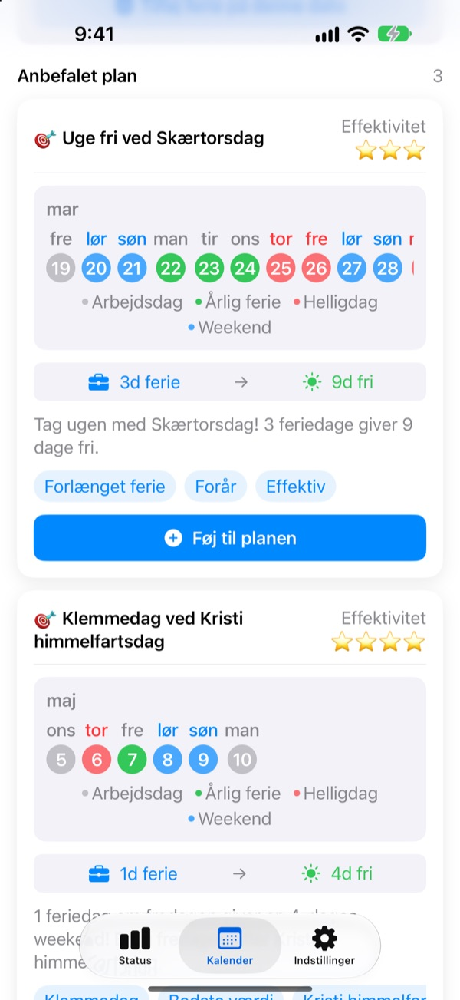
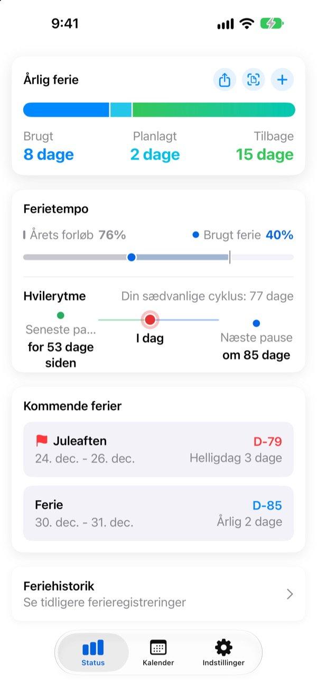
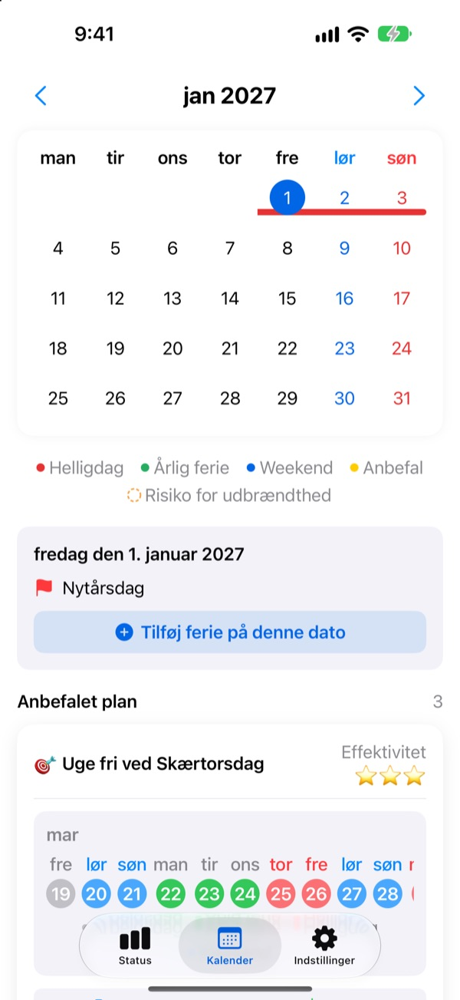
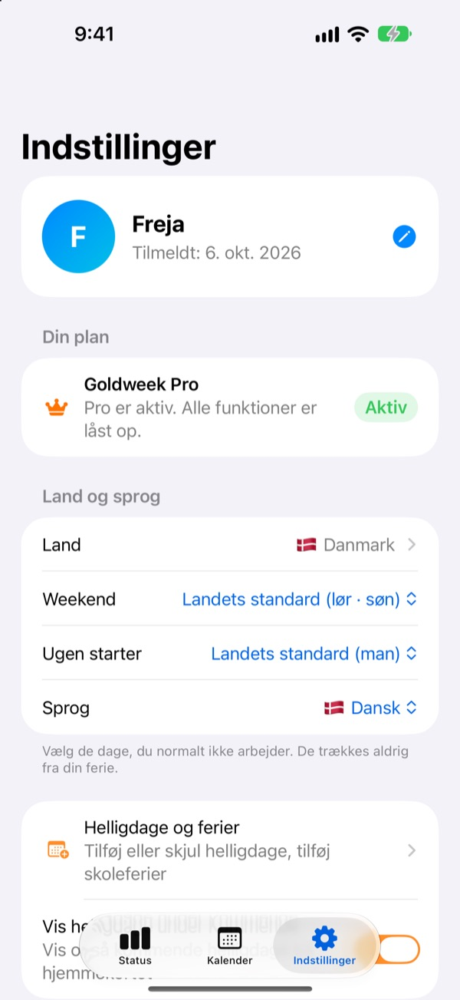

Få feriedage,
lang fri
Goldweek kobler helligdage og weekender og viser præcis, hvilke dage du skal tage fri for at holde længst muligt fri. Slut med at bladre i kalenderen og tælle.
Gratis at hente. Ferieoverblik og forslag er stadig gratis.

Hvor langt rækker dine feriedage?
Vælg, hvor mange dage du kan tage fri. Du ser de længste friperioder, de giver omkring de næste helligdage.
Træt af at tælle dage i kalenderen?
Torsdag er helligdag, skal du så tage fredag fri? Eller gemme dagen til den lange weekend næste måned? Efter nok bladren tager du fri en tilfældig dag, og i december forsvinder de feriedage, der blev tilovers. Goldweek regner for dig og viser de dage, der får ferien til at række længst.
Din ferie med ét blik
I alt, brugt og tilbage på én skærm. Ved siden af ser du, hvor langt året er, og hvor meget ferie du har brugt, så du med det samme kan se, om du sparer for meget op.
Dine resterende dage og kommende fri vises i en widget på hjemmeskærmen.

Læg fri ind direkte i kalenderen
Helligdage, ferie og foreslåede klemmedage vises i farver i kalenderen. Tryk på en dato for at tilføje eller ændre fri, også halve dage, kvarte dage eller timer.
Tidligere ferie henter du ind på én gang fra et billede af HR-skærmen.

Dit land, din arbejdstid
Helligdage i 42 lande, fra Danmark og Norden til Europa, Asien og Amerika. Hvor helligdagene varierer efter region, vælger du din. Mangler dit land? Tilføj dine egne helligdage.
Du kan også vælge weekenddage, ugens første dag, og om du arbejder fast, deltid eller i skiftehold.

Kom i gang på tre trin
- 1
Fortæl, hvor du arbejder
Første gang vælger du land, og hvor mange feriedage du har om året.
- 2
Vælg et forslag
På fanen Kalender finder du foreslåede friperioder. Tilføj dem, du kan lide.
- 3
Registrér din ferie
Tryk på en dato, eller hent tidligere ferie ind fra et billede.
Sådan regnes der
- Hel dag
- 1 dag fra saldoen
- Halv dag
- 0,5 dag
- Kvart dag
- 0,25 dag
- Timer
- Efter dine arbejdstimer den dag
- Sygdom, særlig frihed, tjenesterejse
- Trækkes ikke fra ferien
- Bonusferie
- Ekstra fridage som afspadsering, holdes for sig med udløbsdato (Pro)
Antal feriedage om året og den måned, dit ferieår starter, kan du altid ændre i Indstillinger.
God hvile er gratis. Planlægningen klarer Plus og Pro.
Gratis
- Hele, halve og kvarte dage og timer, med resterende ferie
- Helligdage i 42 lande, egne helligdage og ferier
- Se alle forslag for i år, tilføj op til 3
- Tips om hvileintervaller, påmindelser og widget
- Tilføj ferie fra et foto
- iCloud-sikkerhedskopi og delt plan med familien
Plus og Pro
- Plus: Optimal årsplanlægger
- Plus: Ubegrænsede forslag, også for sidste og næste år
- Plus: Send fri til Kalender-appen
- Pro: Alt i Plus, bonusferie, årsgrænser og overførsel pr. type
- Pro: Importér skolekalender og genkend kalender automatisk
- Pro: Fri sammen og familiens mærkedage
Hvert niveau fås som årsabonnement eller engangskøb for altid.
Årsabonnementer fornyes automatisk, medmindre de slås fra senest 24 timer før periodens udløb. Administrér dem når som helst under Indstillinger > Apple-konto > Abonnementer.
Ofte stillede spørgsmål
Min feriesaldo passer ikke.
Tjek i Indstillinger, hvilken måned dit ferieår starter, og hvor mange feriedage du har i alt. Halve (0,5) og kvarte dage (0,25) trækkes automatisk, og typer, der ikke tæller, som sygdom, særlig frihed eller tjenesterejser, ændrer ikke saldoen. Passer det stadig ikke, så skriv til os.
Min ferie vises ikke i kalenderen.
Aflyst ferie vises ikke i kalenderen. Tjek status for posten i Ferieadministration. En opdatering til nyeste version kan også hjælpe.
Hvordan tilføjer jeg bonusferie?
Tryk på + på fanen Status for at åbne Ferieadministration, og brug afsnittet Bonusferie nederst. Vælg en type (afspadsering, belønningsfri, restitutionsferie …), antal dage og eventuelt en udløbsdato. Bonusferie holdes adskilt fra almindelig ferie.
Jeg har betalt, men intet er låst op.
Tryk på Gendan køb nederst på fanen Indstillinger. Købet gendannes med den Apple-konto, du er logget ind med i App Store. Hjælper det ikke, så skriv til os.
Mister jeg mine data, hvis jeg sletter appen?
Dine data ligger på enheden, så sletter du appen, forsvinder de. Slå iCloud-sikkerhedskopi til, så du har en kopi, du kan gendanne senere.
Kan jeg tilføje egne helligdage eller skjule nogle?
Ja. Under Helligdage og ferier i Indstillinger tilføjer du egne helligdage eller skjuler standardhelligdage.
Hvilke lande understøttes?
Goldweek kender helligdagene i 42 lande. Vælg land i Indstillinger (og region, hvor helligdagene varierer), så opdateres kalenderen med det samme. Mangler dit land, kan du selv lægge helligdagene ind eller ønske det via feedback i appen.
Hvor gemmes mine data?
Det, du indtaster, bliver på din enhed eller i din egen iCloud. Vi modtager kun anonym brugsstatistik, anonyme nedbrudsrapporter og feedback, du selv vælger at sende.
Til alt, der ikke er besvaret ovenfor, idéer eller fejl, skriv til leeo@kakao.com. Vi svarer som regel inden for en til to hverdage.